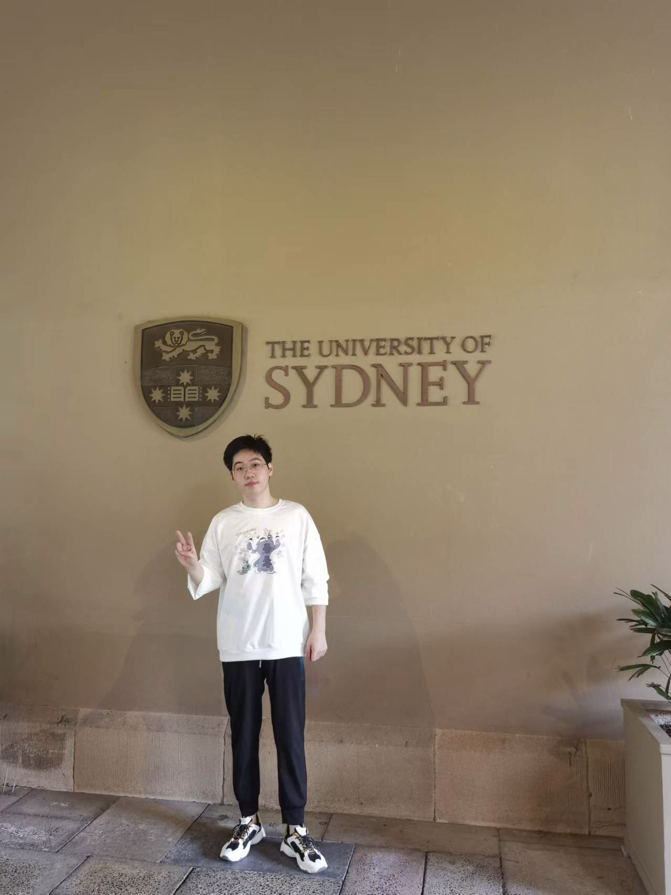

ECONOMICS · THE UNIVERSITY OF CHICAGO · EST. SIGNAL > NOISE
TEXT AS DATA×LLMs×FINANCIAL ECONOMICS
§01 / ABOUT

I am an Economics student at The University of Chicago. Previously, I obtained my Master of Commerce in Data Analytics from the University of Sydney (Distinction) and my Bachelor's degree from the University of Canterbury.
I am interested in using NLP and large language models to study information disclosure, corporate decision-making, and investor attention — treating text as data to turn unstructured information into economic insight.
§02 / RESEARCH
My work bridges the gap between unstructured data and economic theory. I apply computational methods and causal inference strategies to uncover behavioral anomalies and understand market dynamics — currently, constructing novel datasets from textual information to predict market returns and analyze investor behavior.
Replicating empirical tables and figures by translating partial identification strategies into Python/R code. Designing Monte Carlo simulations to evaluate finite-sample bias and variance of new estimators.
Constructed a large-scale dataset by crawling hundreds of thousands of corporate disclosure records. Estimated the causal impact of environmental regulations on firm behavior using quasi-experimental designs.
§03 / OUTPUT
Applied Economics · Applied Economics Letters · Review of Quantitative Finance and Accounting · Finance Research Letters · International Review of Economics & Finance · Scientific Reports · Information Processing & Management · Economics of Governance · Discover Sustainability
§04 / LOG
§05 / CONTACT
41.7943° N, 87.5907° W — CHICAGO, ILLINOIS, UNITED STATES